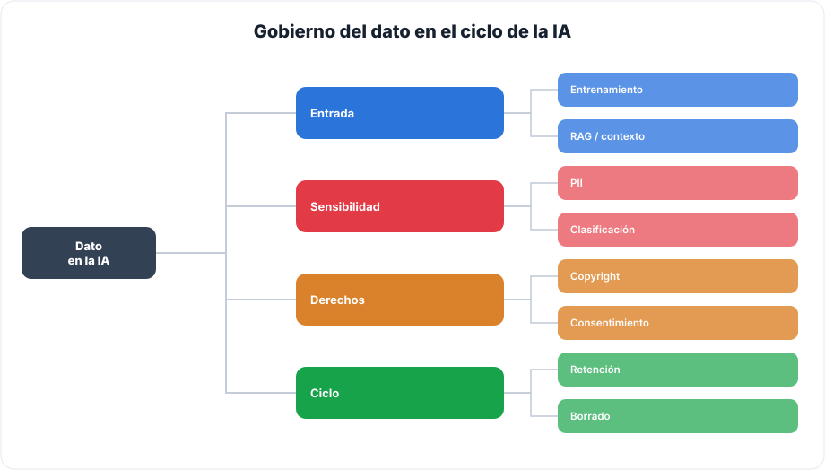
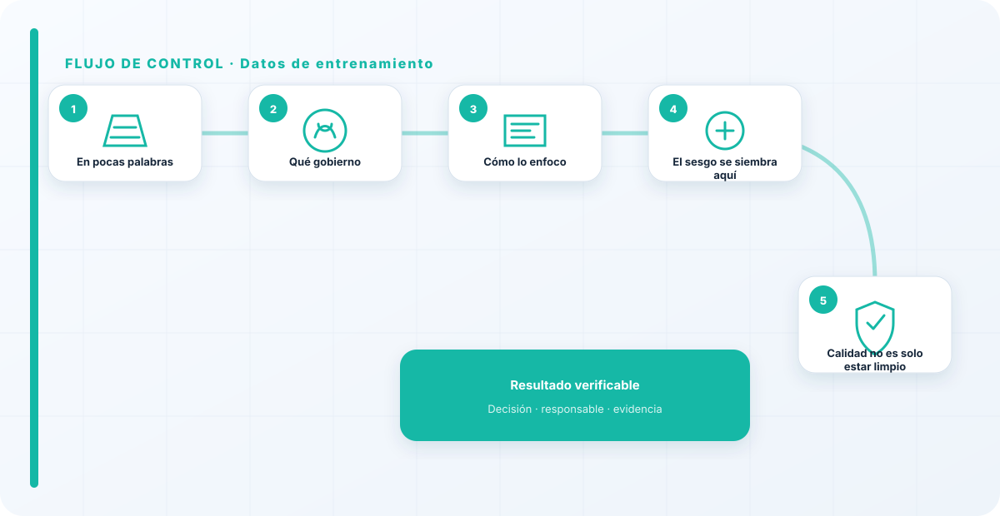
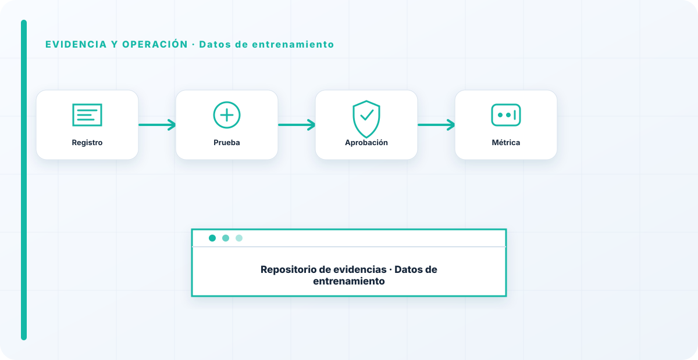

En pocas palabras
El dato de entrenamiento es el ADN del modelo: su calidad, su legalidad y sus sesgos se heredan enteros en el comportamiento final. Gobernar ese dato es lo que decide si el modelo será fiable, legal y justo, o si arrastrará problemas cocidos de fábrica. Y sin embargo, la gente se obsesiona con el modelo y descuida los datos, cuando es exactamente al revés: el modelo es, en gran parte, un reflejo de con qué lo entrenaste.
Qué gobierno
Cuatro cosas: la calidad de los datos, el permiso para usarlos, su representatividad y su procedencia. Un dato malo entrena un modelo malo; un dato sin derecho de uso es un problema legal; un dato sesgado, un modelo que discrimina; y un dato de origen desconocido, un modelo en el que no puedes confiar del todo.

Todo lo que entra en el entrenamiento acaba, de una forma u otra, en el comportamiento del modelo. Por eso gobernar el dato de entrenamiento no es un paso previo opcional, es donde se decide la mitad de la calidad y del riesgo del resultado.
Cómo lo enfoco
Antes de entrenar —o de aceptar un modelo de terceros— exijo saber con qué se entrenó. Se enlaza con la procedencia de datasets, que verifica el origen, y con el copyright, que mira si tenías derecho a usarlos.
Si no puedo saber con qué se entrenó un modelo de terceros, al menos lo asumo explícitamente como un riesgo, en vez de fingir que no existe. Lo peor es construir sobre un dato desconocido creyendo que es conocido.

El sesgo se siembra aquí
El sesgo de un modelo casi nunca se decide en el algoritmo; se siembra en los datos. Si el dataset no representa bien a los grupos sobre los que el modelo va a decidir, el modelo discriminará por mucho que nadie lo quisiera. Y ese sesgo es difícil de detectar después y casi imposible de quitar sin reentrenar, porque ya forma parte de lo que el modelo aprendió.
Por eso la representatividad del dato de entrenamiento no es un tecnicismo estadístico: es una cuestión de justicia y de riesgo legal que se juega antes de entrenar, no después.
Calidad no es solo estar limpio
Cuando la gente piensa en "calidad del dato" piensa en datos sin errores, bien formateados. Eso es necesario pero no suficiente. Un dataset puede estar impecablemente limpio y ser malo para entrenar: si no representa bien la realidad sobre la que el modelo va a decidir, el modelo aprenderá una foto distorsionada por muy pulcra que sea. Calidad, para mí, es sobre todo representatividad: que el dato cubra los casos que el modelo se va a encontrar, incluidos los raros y los incómodos.
Un dato limpio pero sesgado o incompleto produce un modelo limpio pero sesgado o incompleto. Por eso miro tanto qué falta en el dataset como qué contiene: lo ausente es lo que el modelo no sabrá manejar el día que aparezca.
La gente se obsesiona con el modelo y descuida los datos, y es exactamente al revés: el modelo es en gran parte un reflejo de sus datos de entrenamiento. Si no gobiernas ese dato, no gobiernas el modelo, solo esperas que salga bien. Los problemas de sesgo y legales que estallan luego casi siempre estaban ya sembrados en el dataset.
Los errores que veo una y otra vez
- Descuidar el dato y obsesionarse con el modelo.
- Entrenar con datos sin derecho de uso.
- No comprobar representatividad ni sesgo.
- Aceptar modelos de terceros sin saber su dato.
- Olvidar la procedencia.
Cómo lo llevaría a un entorno real
Cuando aterrizo datos de entrenamiento en una organización, no empiezo por comprar una herramienta ni por redactar veinte páginas. Empiezo por dibujar qué ocurre hoy: quién solicita el cambio, quién lo aprueba, qué sistemas intervienen, qué datos cruzan el proceso y quién se entera cuando algo falla. Ese dibujo suele descubrir más problemas que cualquier checklist. En gobierno del dato, lo peligroso no es solo carecer de controles; también lo es creer que existen porque alguien los escribió una vez.
Después separo lo imprescindible de lo deseable. Lo imprescindible debe poder comprobarse: un responsable identificado, una regla clara, una evidencia fechada y un mecanismo para reaccionar. En este caso revisaría especialmente datos, clasificación y linaje. No me vale una respuesta del tipo «lo gestiona el proveedor» o «eso lo mira seguridad». Necesito saber qué persona toma la decisión, con qué información y dentro de qué plazo.
La implantación debe crecer con el riesgo. Un piloto interno puede funcionar con una ficha breve y una revisión manual. Un sistema que afecta a clientes, empleados, dinero o información sensible necesita segregación de funciones, pruebas independientes, monitorización y un expediente mantenido. Mi criterio es sencillo: cuanto más difícil sea deshacer el daño, más fuerte debe ser la barrera antes de producción.
Decisiones que deben quedar por escrito
Hay decisiones que no deberían vivir en una reunión ni en un mensaje de chat. Para datos de entrenamiento dejaría documentados el alcance, los supuestos, los límites de uso, las excepciones aceptadas y las condiciones que obligan a detener o reevaluar. El documento no tiene que ser enorme, pero sí debe permitir que otra persona entienda por qué se hizo lo que se hizo.
También registraría quién puede cambiar calidad, quién valida retención y quién recibe las alertas relacionadas con acceso. Cuando esas tres responsabilidades se mezclan, aparece el clásico problema: el mismo equipo construye, aprueba y declara que todo funciona. No siempre se puede separar por completo, sobre todo en organizaciones pequeñas, pero al menos debe existir una revisión por alguien que no dependa del éxito inmediato del despliegue.
Las excepciones merecen un tratamiento propio. Una excepción sin fecha de caducidad acaba convirtiéndose en la arquitectura real. Por eso exigiría motivo, riesgo aceptado, responsable, compensaciones, fecha de revisión y criterio de cierre. Si falta uno de esos elementos, no es una excepción gestionada; es una deuda invisible.

Un ejemplo práctico
Imaginemos que un equipo quiere incorporar datos de entrenamiento a un servicio que ya está en producción. La propuesta promete reducir tiempos y automatizar tareas, pero utiliza componentes que cambian con frecuencia. Antes de aprobarlo, pediría una prueba limitada, un inventario de dependencias, un flujo de datos y una definición clara de qué acciones quedan fuera del alcance.
Durante la prueba recogería resultados normales y casos límite. No solo miraría si funciona; comprobaría qué ocurre cuando faltan datos, cambia una versión, se pierde conectividad, llega una entrada manipulada o un usuario intenta superar sus permisos. Ahí es donde se ve si el diseño aguanta. En muchas pruebas felices todo parece seguro porque nadie ha intentado romper la hipótesis de partida.
Si los resultados son aceptables, la salida a producción tendría condiciones: versión fijada, configuración aprobada, logs disponibles, responsables de guardia, procedimiento de rollback y revisión tras las primeras semanas. Si alguno de esos elementos no existe, prefiero retrasar el despliegue. Un día de demora suele ser más barato que investigar después un comportamiento que nadie puede reconstruir.
Qué evidencias guardaría
Para demostrar que el control funciona conservaría evidencias que cuenten una historia completa, no capturas sueltas. La historia debe enlazar necesidad, decisión, implementación, prueba y operación. En datos de entrenamiento eso incluye como mínimo la ficha del activo, el diagrama vigente, la configuración aprobada, el resultado de las pruebas y el registro de cambios.
No guardaría información por acumular. Si los logs contienen prompts, documentos, datos personales o secretos, aplicaría minimización, control de acceso y retención. La evidencia debe ayudar a investigar y auditar sin crear una segunda fuga de información. Es frecuente endurecer el sistema principal y dejar un repositorio de evidencias abierto a demasiadas personas.
- Propietario y finalidad de datos de entrenamiento, con fecha de revisión.
- Inventario de datos, clasificación y dependencias asociadas.
- Criterios de aceptación y resultados sobre linaje y calidad.
- Configuración efectiva, versión y aprobación del cambio.
- Alertas, incidentes, excepciones y acciones correctivas cerradas.
Señales de que el control no está funcionando
El primer síntoma es que nadie sabe responder con rapidez quién es el responsable. El segundo es que la documentación describe una versión distinta de la que está operando. El tercero es que las alertas existen, pero llegan a un buzón que nadie revisa. Cuando aparecen esos tres síntomas, el problema no es tecnológico: el control se ha desconectado de la operación.
También desconfío de las métricas demasiado perfectas. Cero incidentes, cero excepciones y cien por cien de cumplimiento pueden significar excelencia, pero con frecuencia significan que no estamos mirando. Prefiero indicadores que enseñen tendencia: tiempo de corrección, antigüedad de excepciones, cobertura de pruebas, cambios sin revisión y reincidencias.
Por último, revisaría el comportamiento después de cada cambio significativo. En IA, una actualización de modelo, dataset, prompt, herramienta, permiso o proveedor puede alterar el riesgo sin cambiar el nombre del servicio. Si el proceso solo reevalúa cuando se crea un proyecto nuevo, se quedará ciego durante la mayor parte de la vida útil.
Mi criterio de cierre
Considero que datos de entrenamiento está razonablemente controlado cuando el equipo puede explicar el proceso sin depender de una sola persona, reconstruir una decisión con evidencias y detener el servicio sin improvisar. No busco perfección documental; busco que la organización pueda tomar decisiones repetibles bajo presión.
El cierre no consiste en marcar todas las casillas. Consiste en demostrar que los riesgos relevantes tienen propietario, que los controles se prueban y que las desviaciones producen una acción. Si la evidencia no cambia ninguna decisión, probablemente estamos generando burocracia. Si una decisión importante no deja evidencia, estamos creando fragilidad.
Este enfoque es el que intento mantener en toda CyberLibrary AI: explicar el control de forma que lo entienda negocio, pero con suficiente profundidad para que arquitectura, seguridad, auditoría y operaciones puedan aplicarlo de verdad.
Referencias y marcos relacionados
Contenido educativo y técnico. No sustituye asesoramiento jurídico ni una auditoría formal.